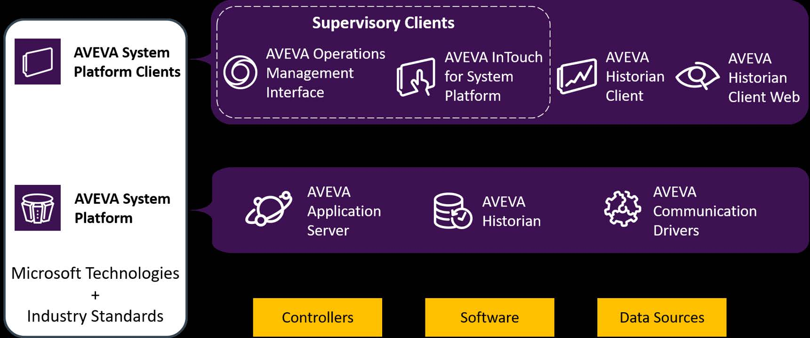
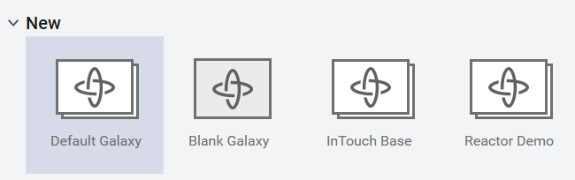
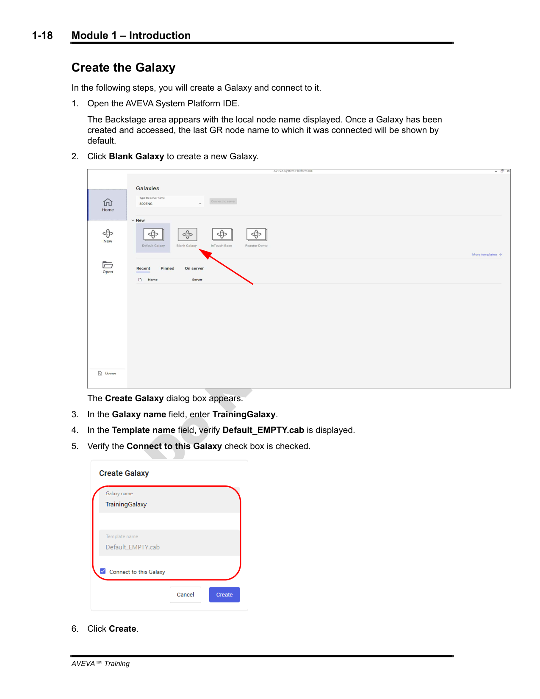
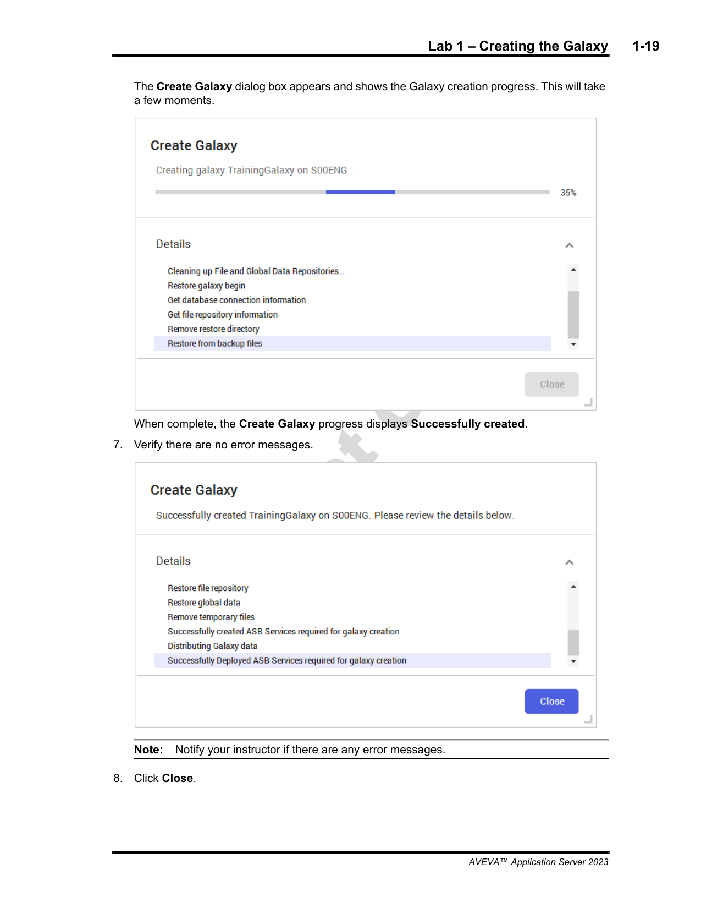
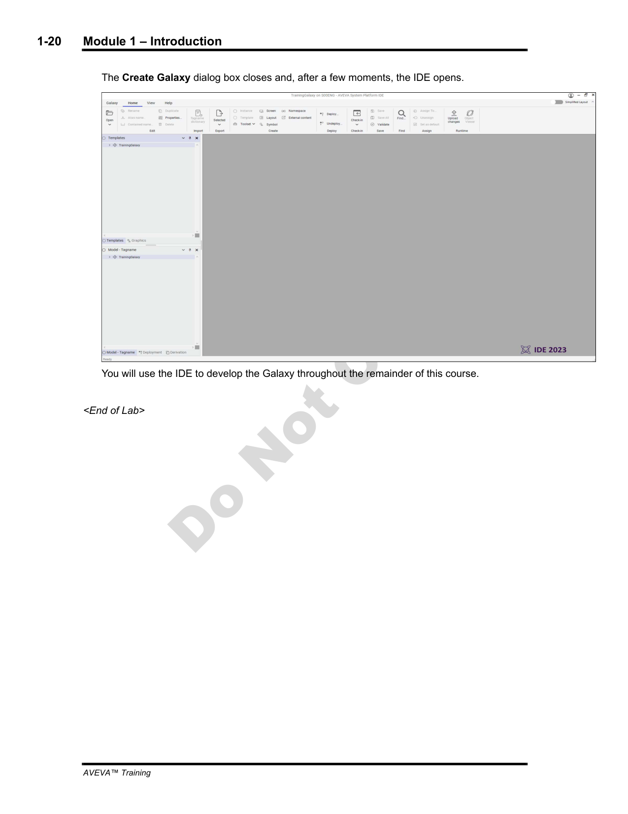

Source: AVEVA Application Server 2023 Training Manual, Module 1, Sections 2-3 (pages 1-9 to 1-20)
The foundation — what Application Server is, what a Galaxy is, and how they fit into System Platform.
Reference: Module 1, Section 2 (pages 1-9 to 1-12)
Before diving into Application Server, you need to understand what System Platform is, because Application Server is just one part of it.
Think of System Platform as a layered system with three groups:

| Layer | Components | What They Do |
|---|---|---|
| Supervisory Clients | OMI (Operations Management Interface), InTouch for System Platform, Historian Client | The screens the operator sees — HMI visualization, trending, data analysis |
| System Platform Components | Application Server, Historian, Communication Drivers | The engine room — handles data, logic, alarms, historization |
| External Data Sources | Controllers (PLCs, RTUs), Software (ERP, MES), Data Sources | Real field devices providing process data |
ArchestrA is the distributed, object-oriented architecture that all System Platform products are built on. It provides:
When you work with Application Server, you are using ArchestrA — even if you never hear the term again. Every object, every deployment, every script runs on ArchestrA.
Reference: Module 1, Section 3 (pages 1-13 to 1-16)
Based on an object-oriented framework, Application Server lets you model your entire plant as objects. From the area level, to equipment (valves, tanks, pumps), to the computers running your application — everything is an object in a Galaxy.
| Feature | What It Means |
|---|---|
| Object-oriented framework | You build applications by assembling reusable objects, not writing code from scratch |
| Native I/O support | Built-in DDE, SuiteLink, and OPC communication with field devices |
| Multi-user development | Multiple engineers can work on the same Galaxy simultaneously (check-out/check-in) |
| Self-documenting | Every object tracks its own version and includes help documentation |
| Security | Role-based permissions for who can configure and operate what |
| Redundancy | Built-in application and I/O communication redundancy |
| Diagnostics | Built-in tools for troubleshooting |
| Scripting with .NET | Full C#/VB.NET scripting capability for custom logic |
| Out-of-the-box graphics | Industrial Graphics and Situational Awareness symbol libraries |
Reference: Module 1, Section 3 (page 1-14)
Application Server is NOT one piece of software. It is three components working together:
| Component | Type | What It Does |
|---|---|---|
| Bootstrap | Windows Service | The software foundation on every computer that will be part of the Galaxy. Without Bootstrap, a computer cannot receive a platform. |
| IDE (Integrated Development Environment) | Application | The tool where you design, configure, and deploy your Galaxy. You build everything here. |
| Galaxy Repository (GR) | Windows Service | The central server that holds the Galaxy's configuration database and manages development + deployment. All IDE commands actually execute here. |
Reference: Module 1, Section 3 (pages 1-14 to 1-15)
A Galaxy is the entire application ecosystem. It is NOT just a database — it is:
The $WinPlatform object represents a physical computer in the Galaxy. When you deploy a $WinPlatform, the Galaxy "owns" that computer. A computer can belong to one and only one Galaxy at a time.
Multiple Galaxies on the same network are isolated by default. They cannot see each other's data. However, they can be configured for multi-Galaxy communication if you need two Galaxies to share data at runtime.
Reference: Module 1, Section 3 (page 1-15)
When you create a new Galaxy, you choose a template — a starting point that pre-populates the Galaxy with certain objects and settings.

| Template | Contents | Best For |
|---|---|---|
| Default Galaxy | Default screen profiles, templates, basic equipment model, OMI ViewApp example | Recommended starting point for most projects |
| Blank Galaxy | Only base template objects — nothing else | When you want full control from scratch |
| InTouch Base | Objects and graphics needed for tag-based Managed InTouch applications | Legacy InTouch-focused projects |
| Reactor Demo | Pre-built demo Galaxy | Learning and evaluation |
Reference: Module 1, Lab 1 (pages 1-17 to 1-20)
Step 1: Open the AVEVA System Platform IDE. The Backstage area appears — this is the starting screen where you choose which Galaxy to work with.
Step 2: Click Blank Galaxy to create a new Galaxy from scratch. The Create Galaxy dialog appears.
Steps 3-5: In the dialog, enter the following:
| Field | Value |
|---|---|
| Galaxy name | TrainingGalaxy |
| Template name | Default_EMPTY.cab (should already be selected) |
| Connect to this Galaxy | ☑ Checked |
Step 6: Click Create.


Step 7: Wait for the progress to complete. Verify there are no error messages.
Step 8: Click Close. The IDE opens with your new Galaxy loaded.

Reference: Module 1, Sections 6-7 (pages 1-53 to 1-59)
AVEVA Application Server supports end-to-end encrypted communication between server and client software. Key requirements:
Licensing is per-node — each computer running Application Server components needs a valid license.
Q1: What are the three components of AVEVA Application Server?
Bootstrap, IDE, Galaxy Repository
Q2: What is the relationship between "Application Server" and "Galaxy"?
They are interchangeable — a Galaxy is the application created with Application Server.
Q3: What does a $WinPlatform object represent?
A physical computer in the Galaxy. Only one $WinPlatform can be deployed per computer.
Q4: When you click "deploy" in the IDE, where does the actual deployment happen?
The IDE sends a command to the Galaxy Repository, and the GR performs the deployment from its computer to the target platform. NOT from the IDE computer.
Q5: How many Galaxies can be deployed and running at the same time on a single Galaxy Repository?
Only ONE Galaxy can be deployed at a time, even though a GR can host multiple Galaxies.
Click each answer to reveal it.
Next: Lesson 2 — The IDE and Galaxy-Wide Settings